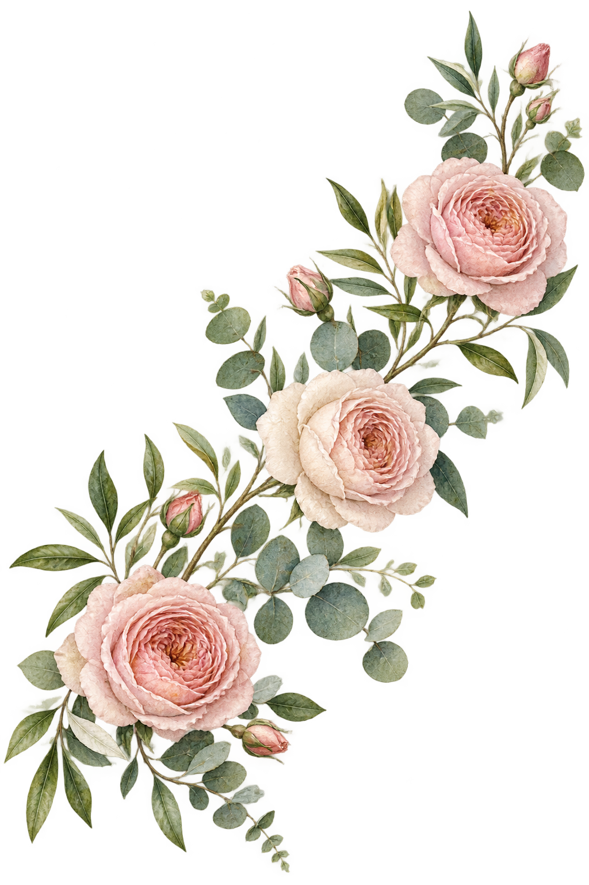
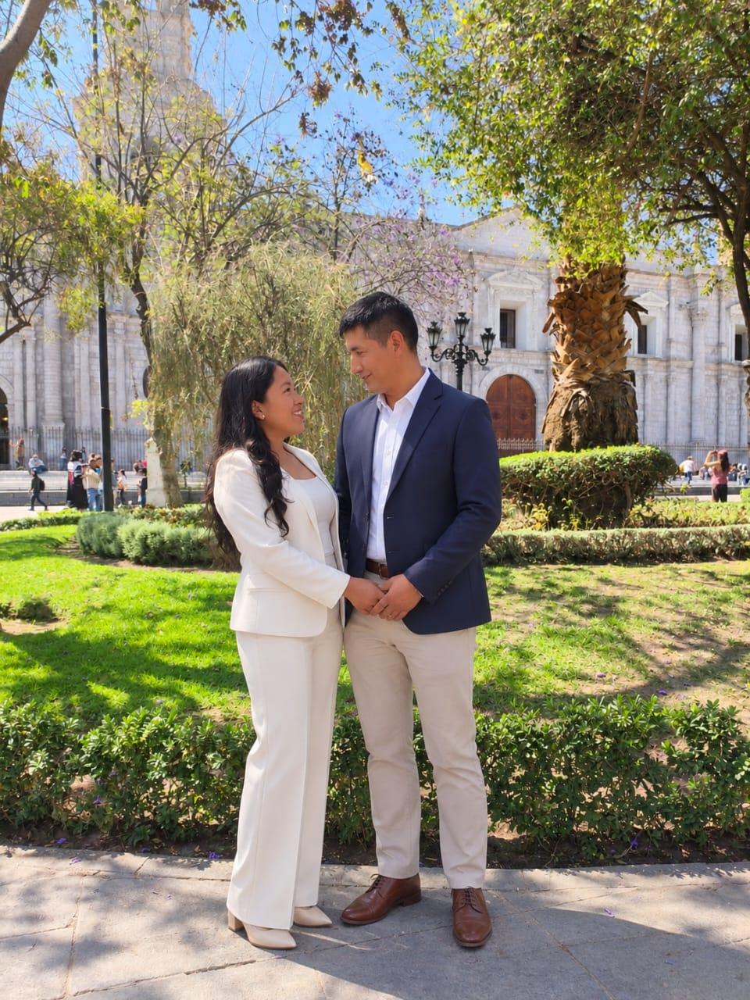
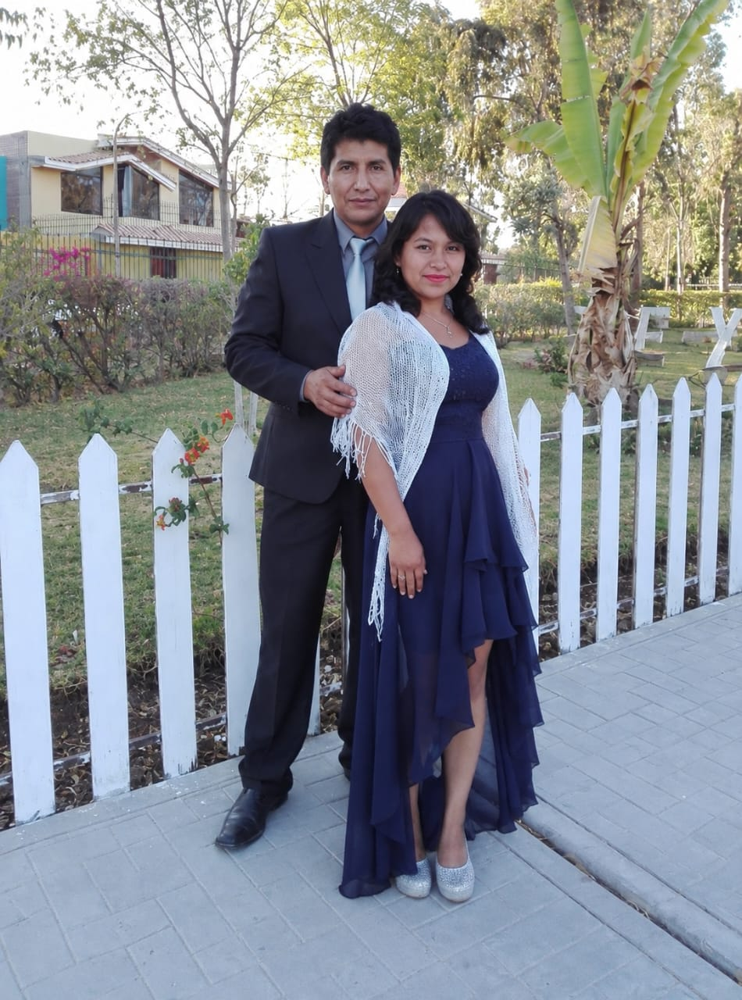
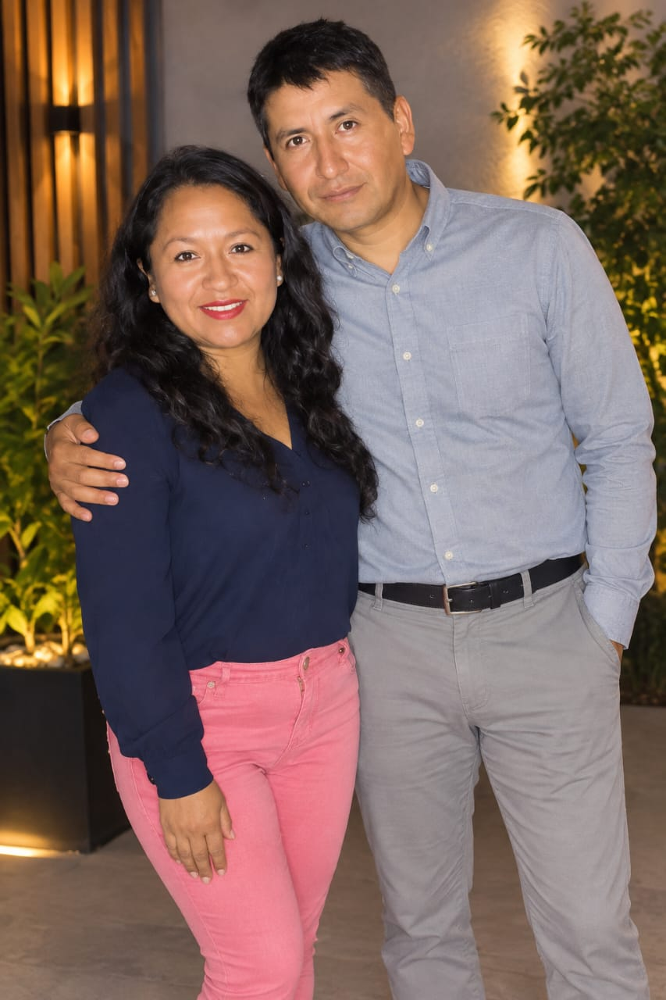
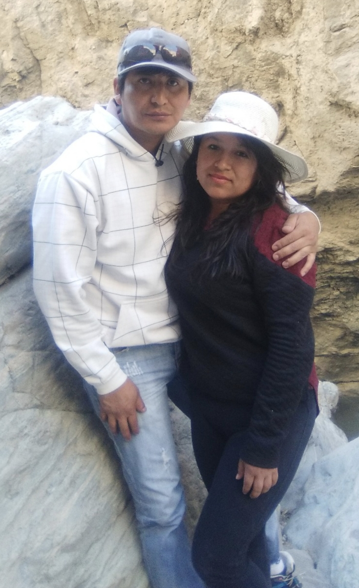
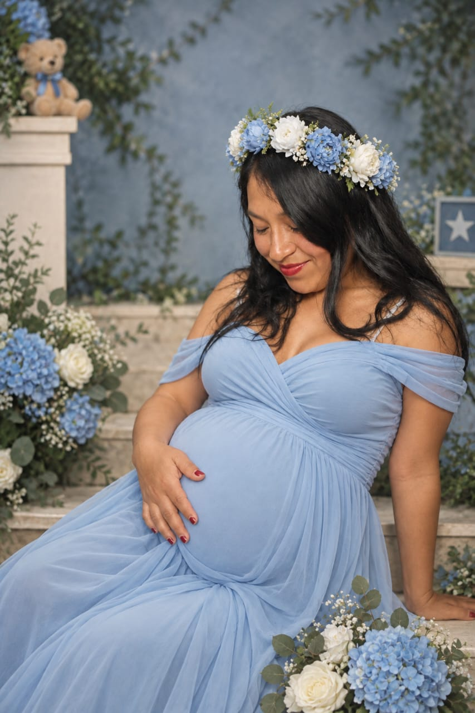
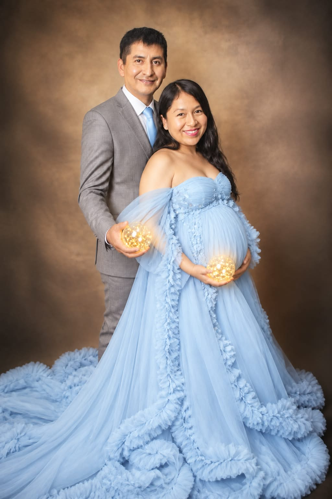

Jackeline&Eliezer
Diez años de historia.
Una vida por seguir compartiendo.
NOVIEMBRE012026
2:00 P. M.
Hay recuerdos que nos trajeron hasta aquí.
Y otros que queremos empezar contigo.



Volveríamos
a elegirnos.
Después de diez años de caminar juntos, de formar una familia, aprender, crecer y superar dificultades, hoy decidimos dar un paso más.
Elegimos seguir caminando de la mano, con una misma visión, un mismo propósito y con Dios como guía de nuestro hogar.
Con todo lo vivido.
Con todo lo que aún soñamos.
“Mejores son dos que uno, porque tienen mejor paga de su trabajo. Porque si cayeren, el uno levantará a su compañero… y cordón de tres dobleces no se rompe pronto.”
Eclesiastés 4:9–10, 12
Nos casamos.
Y queremos que estés.
Domingo 01 de noviembre
2026
2:00 p. m. · Recepción de invitados
3:15 p. m. · Ceremonia civil
Código de vestimenta: elegante.
Local Social de Coripata
Frente a la Capilla
Inmaculada Concepción, Coripata.
Jorge Luis Mamani Choquepata
Ruth Anco Choquehuanca
Momentos de nuestro sí.
Cronograma oficial · Horas aproximadas

Los recuerdos
más bonitos
se comparten.
Con mucha alegría, queremos compartir este día tan especial contigo.
¿Nos acompañas?
Confirma tu asistencia y cuéntanos tu nombre
y cuántas personas te acompañarán.
+51 949 352 214
Nuestro amor
sigue floreciendo.
Después de tantos pasos juntos, hay unas pequeñas huellas que pronto acompañarán las nuestras.
Haziel Alessandro
Nuestro pequeño viene en camino y, con él, una nueva manera de sentir, soñar y amar.
Al llegar la tarde, también celebraremos contigo la dulce espera de su llegada con un baby shower preparado con mucho cariño.


Gracias por acompañarnos en lo que hemos construido y en todo lo hermoso que está por venir.